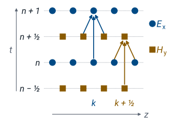
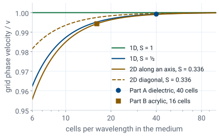
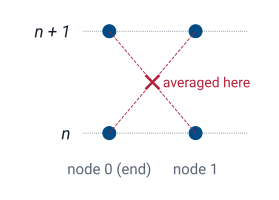
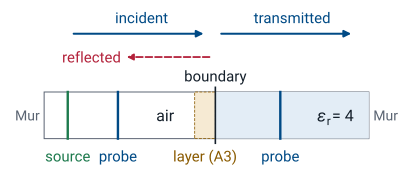
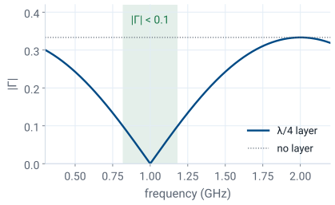
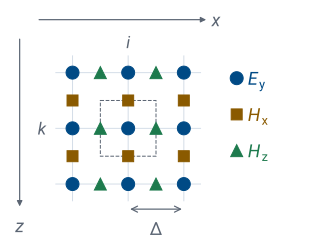
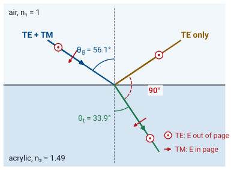
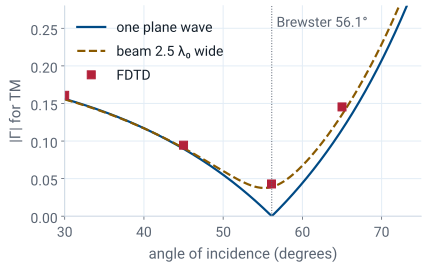

L41 - Incidence Lab#
Incidence Lab
Today you solve Maxwell’s curl equations on a grid and measure reflection and refraction at a boundary.
Lesson 41 · Module 4: Dynamic Fields · Maj Ellis · Dr. Neil Rogers
Learning Objectives
- I can determine the reflection and transmission of UPW at a boundary for Transverse Electric (TE) and Transverse Magnetic (TM) waves, using boundary conditions.
Lessons 38 through 40 found the reflected and transmitted uniform plane waves (UPW) at a boundary by matching the tangential fields on it. This lab finds them a second way: it steps Faraday’s law and the Ampere–Maxwell law forward in time on a grid, and the reflected and transmitted waves come out of the computation without any boundary condition imposed. The method is the finite-difference time-domain (FDTD) method, which engineers use to design antennas, radomes, and optical coatings. In Part A a pulse travels along one axis into a dielectric, and you measure \(\Gamma\) and \(\tau\) and design a quarter-wave anti-reflection layer. In Part B a beam strikes acrylic at an angle, and you measure Snell’s law, the Brewster angle, and total internal reflection. The lab is a Python notebook, run in Google Colab or on your own machine, and you work in a team of two or three.
Where We Were
Lesson |
Result the lab checks |
|---|---|
33, 34 |
The curl equations the grid steps forward |
38 |
\(\Gamma\), \(\tau = 1 + \Gamma\), and Poynting’s theorem |
39 |
Snell’s law and \(\Gamma_\text{TE}\) |
40 |
\(\Gamma_\text{TM}\), the Brewster angle, and total internal reflection |
Each part of the lab reproduces a result from Module 4. Lesson 33 derived the two curl equations, which are all the grid needs, and Lesson 34 collected them with the rest of Maxwell’s equations. Lesson 38 matched the tangential fields at a boundary to get
and derived Poynting’s theorem, which the lab uses to measure power. Lessons 39 and 40 extended the matching to a wave at an angle: phase matching gave Snell’s law, and the two polarizations gave \(\Gamma_\text{TE}\), \(\Gamma_\text{TM}\), the Brewster angle, and the critical angle.
From the Curl Equations to an Update
A plane wave along \(z\) with \(\mathbf{E} = \hat{\mathbf{x}}E_x\) and \(\mathbf{H} = \hat{\mathbf{y}}H_y\) depends only on \(z\) and \(t\). The \(y\) component of Faraday’s law and the \(x\) component of the Ampere–Maxwell law, both from Lesson 33, in a source-free and lossless medium, are the first two equations. The grid replaces each derivative with a centered difference. For the second equation, the time derivative at step \(n + \tfrac{1}{2}\) and the space derivative at node \(k\) become
and solving for the newest value gives the update on the slide. Faraday’s law gives the matching update for \(H_y\):
The code applies the two updates in turn, once per time step, at every node at once. Where a material boundary falls on an \(E_x\) node, the cell around it, from \(k\Delta z - \Delta z/2\) to \(k\Delta z + \Delta z/2\), is half in each medium. \(E_x\) is tangential, so it is continuous (Lesson 24) and takes one value across the cell, and integrating the Ampere–Maxwell law over the cell gives
that node takes the average permittivity \((\epsilon_1 + \epsilon_2)/2\). A field normal to the boundary needs a different average, because its \(D\), not its \(E\), is continuous; Part B meets that case.
The Yee Grid

The grid stores \(E_x\) at whole cells and whole steps.
It stores \(H_y\) halfway between, in space and in time.
The centered differences need each field halfway between the samples of the other. The grid therefore stores \(E_x\) at \(z = k\Delta z\) and \(t = n\Delta t\), and \(H_y\) at \(z = (k + \tfrac{1}{2})\Delta z\) and \(t = (n + \tfrac{1}{2})\Delta t\). This staggered arrangement is the Yee grid. The navy arrows show the \(E_x\) update: the new \(E_x\) at node \(k\) comes from the old \(E_x\) there and the two \(H_y\) values on either side, half a step earlier. The amber arrows show the \(H_y\) update at \(k + \tfrac{1}{2}\), from the old \(H_y\) and the two \(E_x\) values on either side. Each update uses only its neighbors, so a computer can sweep it across millions of cells.
The Time Step
Substitute \(E, H \propto e^{j(\omega n\Delta t - \beta k\Delta z)}\):
The grid is stable only for \(S \le 1\).
At \(S = 1\), \(\omega = v_p\beta\) exactly.
A time step that is too long makes the computed fields grow without bound. To find the limit, we substitute \(E_x = E_0e^{j(\omega n\Delta t - \beta k\Delta z)}\) and \(H_y = H_0e^{j(\omega n\Delta t - \beta k\Delta z)}\) into the two updates. A centered time difference of \(e^{j\omega n\Delta t}\) is \((2j/\Delta t)\sin(\omega\Delta t/2)\) times the wave at the half step, and a centered space difference of \(e^{-j\beta k\Delta z}\) is \(-(2j/\Delta z)\sin(\beta\Delta z/2)\) times the wave at the half node. The two updates become
Multiplying the two equations eliminates \(E_0H_0\):
and with \(v_p = 1/\sqrt{\mu\epsilon}\) its square root is the slide’s grid dispersion relation. The shortest wave on the grid has \(\beta\Delta z = \pi\), so its sine is 1, and for \(S > 1\) it would need \(\sin(\omega\Delta t/2) > 1\): \(\omega\) becomes complex, and that wave grows without bound. The Courant condition \(S \le 1\) prevents it. At \(S = 1\) the two sines are equal, \(\omega = v_p\beta\), and the grid carries every wave at exactly \(v_p\). The notebook runs air at \(S = 1\), so the dielectric of \(\epsilon_r = 4\) runs at \(S = 1/2\), where the grid’s waves travel slightly slower than \(v_p\). The figure solves the dispersion relation for the grid’s phase velocity: with 40 cells per wavelength the dielectric’s waves are 0.1% slow, and the error grows quickly below about 15 cells per wavelength.

Explore: The Courant Limit
The widget runs the two updates of this lesson on 400 cells: air on the left, a dielectric of \(\epsilon_{r2}\) on the right, a Gaussian pulse launched at the source, and Mur ends. It runs a second grid with air everywhere, and the difference at the probe is the reflected pulse; its signed peak over the incident peak is the grid’s \(\Gamma\), shown beside Lesson 38’s. Move \(S\) below 1 and the pulse still splits correctly, but it spreads as the grid’s dispersion grows. Push \(S\) just past 1 and the field near the source grows without bound within a few dozen steps, which is the Courant condition at work. The readout also gives \(S\) in the dielectric, \(S/\sqrt{\epsilon_{r2}}\).
An Edge That Absorbs
At the left end the wave leaves toward \(-z\), \(E_x = f(t + z/v_p)\), so
The grid has to end, and a wave that reaches the end must leave without reflecting, as if the medium continued. At the left end every wave travels toward \(-z\), so it has the form \(f(t + z/v_p)\), and differentiating shows that it obeys the one-way equation on the slide. We write that equation with centered differences at \(z = \Delta z/2\) and \(t = (n + \tfrac{1}{2})\Delta t\), averaging the two nodes and the two time steps, at the point the figure marks:

Multiplying by \(2v_p\Delta t\Delta z\) and collecting the newest end value on the left gives
and dividing by \(v_p\Delta t + \Delta z\) gives the slide’s Mur boundary. The right end is its mirror image. At \(S = 1\) the coefficient is zero and the end node copies its neighbor’s previous value, which is exact for a wave that moves one cell per step.
Pre-Lab: Part A Predictions

Air meets \(\epsilon_r = 4\), so \(\eta_2 = \eta_1/2\):
Work these before the lab period. The pulse starts at the source, passes the probe, and splits at the boundary; the reflected pulse returns past the probe, and the transmitted pulse passes the second probe. Lesson 38’s coefficient with \(\eta_2 = \eta_1/2\) gives
and the power check is \(\tfrac{1}{9} + 2\cdot\tfrac{4}{9} = 1\). A layer between the air and the dielectric acts as Lesson 7’s section of transmission line: a quarter wavelength thick inside itself, it turns the dielectric’s \(\eta_2\) into \(\eta_c^2/\eta_2\), which equals \(\eta_1\) when \(\eta_c = \sqrt{\eta_1\eta_2}\), so \(n_c = \sqrt{n_1 n_2} = \sqrt{2}\). At \(1\ \text{GHz}\) its thickness is
Lesson 7’s line theory gives the layer’s reflection at every frequency, plotted below: a null at 1 GHz and \(\vert\Gamma\vert < 0.1\) from about 0.82 to 1.18 GHz. The notebook measures the same curve on the grid.

Two Dimensions, Two Polarizations

The plane of incidence is \(xz\), and \(\partial/\partial y = 0\).
TE steps \(E_y\), \(H_x\), \(H_z\); TM steps \(H_y\), \(E_x\), \(E_z\).
The grid is stable only for \(S \le 1/\sqrt{2}\).
Part B keeps Lesson 39’s geometry: the boundary in the plane \(z = 0\), medium 1 at \(z < 0\), and the plane of incidence in the \(xz\) plane. Nothing changes along \(y\), so every \(\partial/\partial y\) is zero, and the six components of the curl equations split into two independent sets. The TE set holds \(E_y\), the field perpendicular to the plane of incidence, with \(H_x\) and \(H_z\); the TM set holds \(H_y\) with \(E_x\) and \(E_z\). The figure places the TE set on a square grid of spacing \(\Delta\): \(E_y\) at the nodes \((i, k)\), \(H_x\) at \((i, k + \tfrac{1}{2})\), and \(H_z\) at \((i + \tfrac{1}{2}, k)\). For example, the \(y\) component of the Ampere–Maxwell law is
and its centered differences give the \(E_y\) update
the notebook writes all three TE updates and the TM set. On the boundary row, TE’s \(E_y\) is tangential and takes the average of \(\epsilon\), as in Part A. TM’s \(E_z\) there is normal to the boundary, and \(D_z = \epsilon E_z\) is the continuous quantity (Lesson 24), so the average of \(E_z\) along the cell’s side is
a normal field takes the average of \(1/\epsilon\).
To find the time step we substitute a plane wave with amplitudes \(E_0\), \(X_0\), and \(Z_0\) for \(E_y\), \(H_x\), and \(H_z\). With \(\Omega = (2/\Delta t)\sin(\omega\Delta t/2)\) and \(K_x = (2/\Delta)\sin(\beta_x\Delta/2)\), and \(K_z\) likewise, the three updates become
Substituting the first two into the third gives \(\mu\epsilon\Omega^2 = K_x^2 + K_z^2\), or
Both sines can reach 1 at once, which needs \(2S^2 \le 1\): the limit tightens to \(S \le 1/\sqrt{2}\). The notebook uses \(S = 1/2\) in air, which is \(0.5/1.49 = 0.336\) in the acrylic, at 24 cells per free-space wavelength.
The Simulation

The source is \(g(x)\sin\left(\omega t - \beta_1 x\sin\theta_i\right)\).
A line of cells parallel to the boundary drives the field. Its Gaussian taper \(g(x)\) makes a beam rather than an infinite plane wave, and its phase advances along \(x\) at Lesson 39’s rate \(\beta_1\sin\theta_i\), which is Lesson 39’s phase-matching condition applied to aim the beam at \(\theta_i\). The source line also launches a beam upward, away from the boundary, which the absorbing layer removes. A perfectly matched layer (PML), 24 cells thick, lines the edges. Inside it each field obeys
with \(s\) the curl term and a loss rate \(r\) that grows toward the outer edge. Multiplying by \(e^{rt}\) makes the left side one derivative, and integrating over one step with \(s\) held constant gives the update:
The code splits each field into a part driven by the \(x\) derivatives, which decays at the rate \(r_x\), and a part driven by the \(z\) derivatives, at the rate \(r_z\). In the top and bottom layers only the part driven by \(\partial/\partial z\) decays, so the layer leaves the wave’s variation along \(x\), its phase matching along the layer, as it was, and the layer stays matched to a wave at any angle. Berenger showed that when \(\mathbf{E}\) and \(\mathbf{H}\) decay at the same rate, such a layer reflects nothing at any angle in the continuous limit; that proof is beyond this course, and on the notebook’s grid the layer reflects well under 1%.
Measuring Power

A beam has no single amplitude to compare: its field varies across its width, and the transmitted beam has a different cross-section and a different \(\eta\). Power, by Lesson 38’s Poynting theorem, crosses the boundary without loss, so the notebook measures power. Once the field has settled into a steady state, it extracts each field’s phasor and integrates the time-average Poynting vector along the two dashed lines,
which catches the whole beam whatever its shape. Above the boundary the total field is the incident field plus the reflected field, as the left map shows. A reference run with medium 1 everywhere (center) gives the incident field alone, and subtracting it leaves the reflected beam (right). The reflected power gives \(R = \vert\Gamma\vert^2\), the power below the boundary gives the transmitted fraction \(T\), each measured on its own, and every run checks that \(R + T = 1\), which also tests the absorbing layer.
Pre-Lab: Part B Predictions
Quantity |
Air onto acrylic, \(n = 1.49\) |
|---|---|
\(\vert\Gamma\vert\) at \(0^\circ\) |
0.197 |
\(\theta_t\) at \(45^\circ\) |
\(28.3^\circ\) |
Brewster angle |
\(56.1^\circ\) |
Critical angle, acrylic to air |
\(42.2^\circ\) |
\(1/\alpha\) at \(50^\circ\), acrylic to air |
\(0.289\lambda_0\) |
Work these before the lab period, from Lessons 38 through 40. At normal incidence, \(\vert\Gamma\vert = (1.49 - 1)/(1.49 + 1) = 0.197\). Snell’s law at \(45^\circ\) gives \(\sin\theta_t = \sin 45^\circ/1.49 = 0.4746\), so \(\theta_t = 28.3^\circ\). The Brewster angle is \(\arctan 1.49 = 56.1^\circ\), where the TM reflection vanishes, as Lesson 40’s figure shows:

The critical angle from acrylic is \(\arcsin(1/1.49) = 42.2^\circ\). Beyond it, at \(50^\circ\), Lesson 40’s decay constant, with medium 2 air (\(n_2 = 1\) and \(\beta_2 = \beta_0\)), is
so the evanescent field’s decay length is
The notebook also asks for \(\vert\Gamma_\text{TE}\vert\) and \(\vert\Gamma_\text{TM}\vert\) at \(30^\circ\), \(45^\circ\), and \(65^\circ\), from Lessons 39 and 40.
Why a Beam Is Not a Plane Wave

A beam holds plane waves over a spread of angles.
Each angle in the spread reflects by its own \(\Gamma\).
Lessons 39 and 40 describe one plane wave at one angle. The notebook’s beam has a \(1/e\) field half-width of \(w = 2.5\lambda_0\), and a beam of finite width is a sum of plane waves over a spread of about \(\lambda/(\pi w)\) radians to each side, with \(\lambda\) the wavelength in medium 1. In air that is \(1/(2.5\pi) = 0.127\) rad, or \(7.3^\circ\); in the acrylic it is \(1/(1.49\cdot 2.5\pi) = 0.085\) rad, or \(4.9^\circ\). Only the wave at exactly \(56.1^\circ\) has \(\Gamma_\text{TM} = 0\); its neighbors reflect a little, and their powers add. Averaging the plane-wave \(\vert\Gamma_\text{TM}\vert^2\) over the beam’s spread gives the dashed curve, whose minimum is about 0.04, and the grid measures 0.043 at the Brewster angle, against about 0.38 for TE. The same spread makes the evanescent field of Part B3 decay about 9% more slowly than the single-angle prediction, \(0.31\lambda_0\) against \(0.289\lambda_0\), because the angles nearer the critical angle decay more slowly. A wider beam narrows the spread, but it needs a larger grid and a longer run.
Teams and the Report
Work in a team of two or three, and submit one report per team.
Open the notebook in Colab (link below), choose File, then Save a copy in Drive, and share the copy with your teammates. Or download it and run it locally with Python 3, NumPy, and Matplotlib.
Run the cells in order. A cell marked
TODOis yours to finish; the rest are given. Answer every Answer cell. Part A runs in seconds; Part B’s simulations take about three minutes in all.Before you submit, choose Runtime, then Run all, so every output is current. Put every member’s name and a Documentation line in the first cell.
Export to PDF and upload it to Gradescope as one team submission, adding every member.
You do not check out any equipment; the lab needs only a laptop.
Lab Notebook
The notebook is the lab packet and the turn-in document. It holds the derivations, the code you finish, and the questions you answer. Colab runs it in the browser with nothing to install; a local copy needs Python 3 with NumPy and Matplotlib. Work the pre-lab predictions before the period.
Where This Is Going
Lesson 41: this lab ends the course’s lessons.
Final exam: all four modules, from transmission lines to plane waves.
The course began with a voltage wave on a transmission line and its reflection from a load, and it ends with a plane wave and its reflection from a boundary. Lesson 38 showed that the two are the same problem: \(\Gamma\) in Lesson 6 and \(\Gamma\) in Lesson 38 are the same ratio of impedances, and the quarter-wave layer of Part A is Lesson 7’s quarter-wave line. Review the four modules for the final exam with that shared \(\Gamma\) in mind: transmission lines, electrostatics, magnetostatics, and dynamic fields.